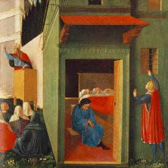

The Secret Meaning Behind Christmas Stockings
(The Legend of the Three Girls)
You might ask yourself how to explain Christmas stockings in a Christian context to your children. To understand the custom of Christmas stockings, you need to understand the legend of St. Nicholas and the three young girls.
A widower – an aristocrat in (Saint) Nicholas’
church – has lost all his money. His three daughters are of marriageable age,
but he doesn’t have enough money left for their dowries, or even enough to
support his family of four. He decides to make money out of the only thing left
to him – their beauty.
Somehow, Nicholas hears of the man’s plans. Rather than see the girls forced into prostitution, he secretly tosses a bag of gold through the man’s window on two separate occasions, thus enabling the first two daughters to be married. Curious to know who his benefactor is, the father prays:
“O merciful God, Author of our salvation, Who has
redeemed me by Your own blood and now redeems by gold my home and my daughters
from the nets of the enemy, show me the minister of Your mercy and Your
philanthropic goodness. Show me this earthly angel who preserves us from sinful
perdition, so that I might know who has snatched us from the poverty which
oppresses us and delivers us from evil thoughts and intentions. O Lord, by Your
mercy secretly done for me by the generous hand of Your servant unknown to me,
I can give my second daughter lawfully in marriage and with this escape the
snares of the devil, who desired by a tainted gain, or even without it, to
increase my great ruin.”
Guessing that the benefactor will be equally kind to
his third daughter, the father decides to be on the watch. Again, Nicholas
comes by night and throws a bag of gold into the room. This time, the father is
awake and runs after him. Nicholas tries to outrun him, but the father quickly
catches up. He seizes Nicholas by the hem of his robe and flings himself at his
feet, crying, “If you had not saved us in time, our family would have been
destroyed, materially and morally.”
Nicholas is embarrassed when the man attempts to kiss his feet and hands and tells him, “Please, don’t tell anyone of this deed as long as I live; I hold you responsible, in the presence of God, to keep my secret safe.” Only after the death of Nicholas does the father reveal the generous action that Nicholas had taken as a young man.
St. Simeon Metaphrastes saw in the gifts to the
three girls a pattern of Nicholas’ later life. He wrote in the “Vita per
Metaphrasten”:
“Now that we know of this
one deed, we are able to understand the other achievements he tried to keep
secret, seeking to avoid the praise of men and hoping only for God’s approval.
Yet, the more he tried to hide his qualities, the more did God reveal his true
nature, in order to honor him, just as he had honored God through his deeds of
mercy.”
This is the story that, in general, has linked the
name of St. Nicholas particularly with the virtue of generosity. Among
schoolboys in the Middle Ages, the story was particularly well known. It formed
the subject of one of the plays performed by them on the eve of the Feast of
St. Nicholas.
Over the centuries, this particular legend evolved
into the custom of giftgiving on the Feast Day of St. Nicholas. The secret
manner of bringing the gifts to the children must have been an old practice as
may be understood from the incident recorded of the young man of the sixteenth
century. In an attempt to imitate St. Nicholas, he fell through an opening left
for grain and nearly lost his life!
Thought to Ponder: In the ongoing war of among
the fast-food giants, a commercial comes along that says it all. A spokesman
from one chain is having a debate with Ronald McDonald. After outlining all the
benefits of his own product (great taste, great food, and great prices), he
asks Ronald McDonald what McDonald’s has to offer. The clown happily responds,
“Toys! Lots and lots of toys!”
For me, that is the essence of the debate between the St. Nicholas and Santa Claus. Christmas is supposed to revolve around the birth of the Baby Jesus and what the one special birth meant: Jesus came into the world to save us from our sins.
“Now the birth of Jesus Christ was as follows: After His mother Mary was betrothed to Joseph, before they came together, she was found with child of the Holy Spirit. Then Joseph her husband, being a just man, and not wanting to make her a public example, was minded to put her away secretly. But while he thought about these things, behold, an angel of the Lord appeared to him in a dream, saying, ‘Joseph, son of David, do not be afraid to take to you Mary your wife, for that which is conceived in her is of the Holy Spirit. And she will bring forth a Son, and you shall call His name Jesus, for He will save His people from their sins.’” (St. Matthew 1:18-21 NKJV)
St. Nicholas devoted his entire life to the
spiritual and physical salvation of sinners. Let us do the same.
Thought to Discuss Around the Dinner Table: Nicholas’ parents set an example for him through their service to the poor. The epistle for his Feast Day (Hebrews 13:16-21) contains the verse, “Do not neglect to do good and to share what you have, for such sacrifices are pleasing to God…” It was a lesson he never forgot.
This peaceful existence was soon to be upset by tragedy. When he was nine years old, a plague swept through his village and both his father and mother died. Nicholas moved in with friends of his parents.
As he grew older, he learned to share the love he
had seen in his parents with the people of his village. His father had left him
a small inheritance, which enabled him to give gifts of food, clothing and
money to the poor.
As we saw in this legend, St. Nicholas was careful
to remain anonymous with his charities. Usually he preferred to receive no credit
for his gifts, desiring rather to make his visits to the homes of the poor and
unfortunate under the cloak of darkness so that no one would know who he was.
He felt that if anyone should receive the praise and glory, it should be God, and not Nicholas.
How can we do the same during this Christmas season – and all year round?
The Secret Meaning Behind Christmas Stockings
(The Legend of the Three Girls)

“Most assuredly, I say to you, he who believes in
Me, the works that I do he will do also; and greater works than these he will
do, because I go to My Father.” (John
14:12 NKJV)